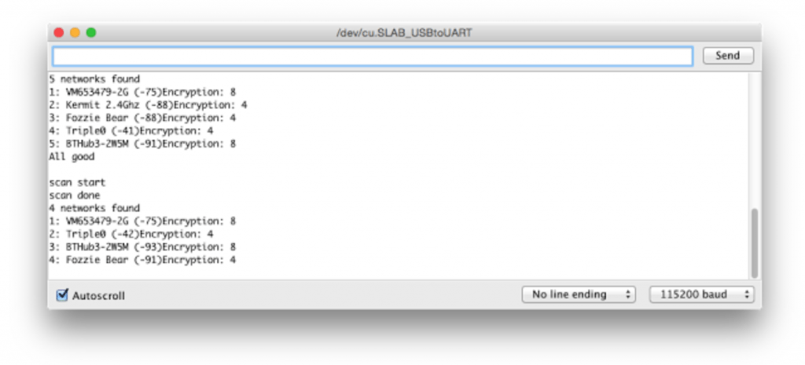
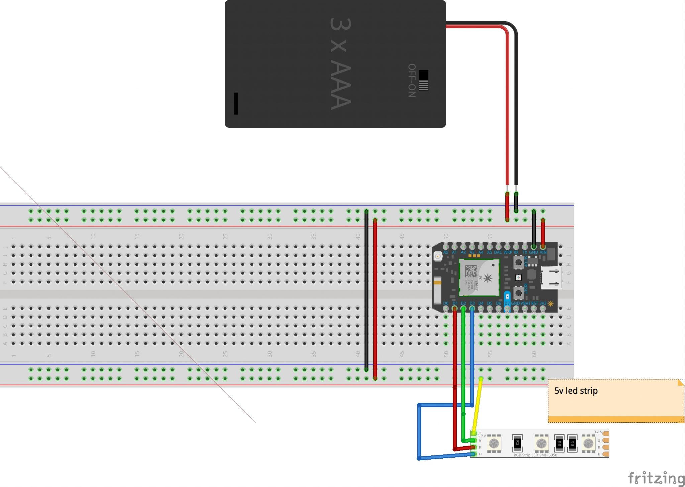
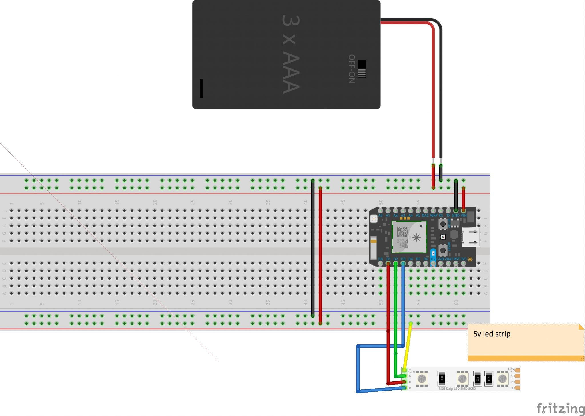
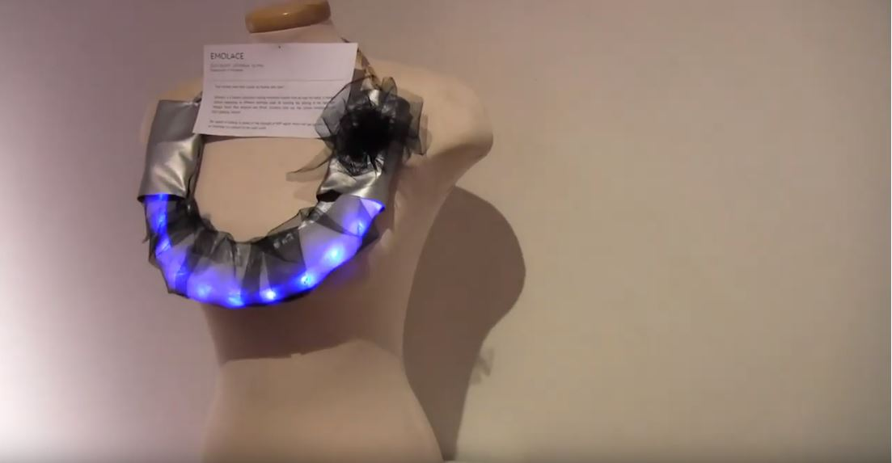

EmoLace
Created using Particle photon, C++, REST API, RSSI, LEDs and fabrics
Summary
Ever wonder what other people are feeling right now? Emolace is a fashion accessory reading emotional tweets from all over the world. It changes colors depending on different hashtags used. By tracking the sharing of the hashtags: #happy #sad #ew #scared and #mad, Emolace tells the current emotion of the ever-updating internet. The speed of blinking is based on the strength of WiFi signal, which represents how well as an individual is connected to the cyber world. Emolace incorporates Particle Photon with IFTTT and powered by three AA batteries. It is comfortable to wear and can be turned on /off by a switch on the back. Its unisex design goes equally well with a broad range of outfits.
Group members: Yiyi Shao, Jad Rabbaa, Quinn Rockliff
Full working diary can be found here
My responsibilities: concept design, project management, coding

Objective
Portables. Moveables. Wearables. Pocketables. Multiples. The goal of this experiment is to create robust interactive prototypes that we can make more than one of and that we want to travel with us. We are responsible for producing 3 copies of the prototype - 1 per person in the group. Each group member will have (2) 6-hour experiences of the process of taking our portable out into the field including self-testing, repairing, journaling.
Action


 

Emolace – User Testing Plan
Repair Kit
- extra batteries
- needle and thread
Our using testing plan is to test the 3 devices separately and record our experiences through a form that will be answered every 3 hours. Participants are encouraged to document moments that stand out to them but try and do daily tasks and functions they normally would.
Short vlogs documenting experience.
Testers will take short ten-fifteen second video logs recording their experiences and concerns. This is for moments that cannot be captured in the form.
Form to be answered every 3 hours. For a total of 4×3 responses.
- How aware are you of the necklace?
- Is it comfortable to wear?
- Do you feel a connection to the changing colours?
- Does this connection affect how you feel about other events in your life?
- How does the reaction of other people impact your experience with the device?
- What questions are they asking?
- Were you aware of the changing brightness of the LEDs, did this make you aware of the spaces you were in?
- Additional comments obstacles experienced.
Exhibits
Creation & Computation Final Show
Grad Gallery, OCAD University, December 2017


DF Open Show
OCAD University, February 2018